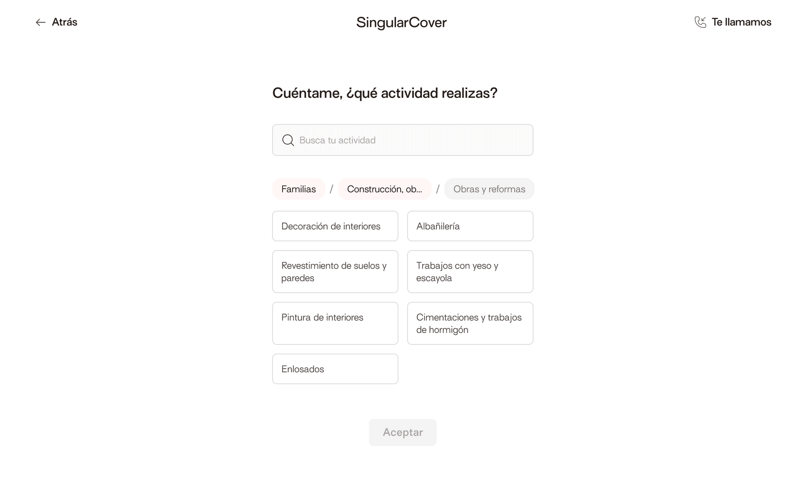

Date: September 2021
Search functionality
Team: Ivan Alvins
Role: UX Designer
SingularCover
SingularCover is a digital insurance company (Insurtech). Its core value proposition is to offer self-employed and small companies personalized insurance that fits their needs.
Role
As a UI Design intern in the company, trying to find my way into research 😅, I had to prove how eager I was to get involved in the process and to learn. Some of my responsibilities in this transition included: designing and prototyping the test options, preparing a script for the interview/test, talking with different stakeholders, understanding technical constraints and business requirements, and defining copies with the content team.
Search Feature
Context
After reviewing our metrics in Mixpanel, we encountered that the churn rate on the search screen was almost 60% 👎. Our Hypothesis was that our current search feature wasn't "smart" enough for users to find their Business Activity (BA). The Search used to look like this.
What were we trying to achieve?
We want to increase the success rate of users finding their Business Activity (BA) and therefore hiring an insurance product successfully
What was our plan?
We decided to provide the user with two modes of engagement to search their BA. One mode was a search bar, and the second mode was through filters [ Family → Category → BA ].
What options did we consider?
For the UI we considered using a modal (option A) to show the search functionality or showing the search without a modal (option B) to reduce the number of interactions. Initially, we decided to go with option B.
Option A
Option B
What drove our decision?
We got feedback from users about the number of clicks it took them to get to the search when using the modal option. This made us rethink the navigation and discard the modal.
What actually happened?
When trying the option without the modal (Option B), users didn't understand how to navigate through the search. They didn’t associate the breadcrumb element with the filter navigation. Out of 6 users, only 1 understood the breadcrumb element.
How did we react?
We got back to the drawing board and provided a quick-win solution to reduce the number of clicks from the user for Option A (Using a modal).
What was the result?
Next Steps
In the next steps, we must accompany the front-end team in the development of the new functionality and review the fidelity of the design (QA). We will also be measuring if the churn rate decreases in the next month and from here make future decisions.
Working at SingularCover, as time goes by I continue to grow professionally, stay tuned for future case studies 🙃. Thanks for reading!